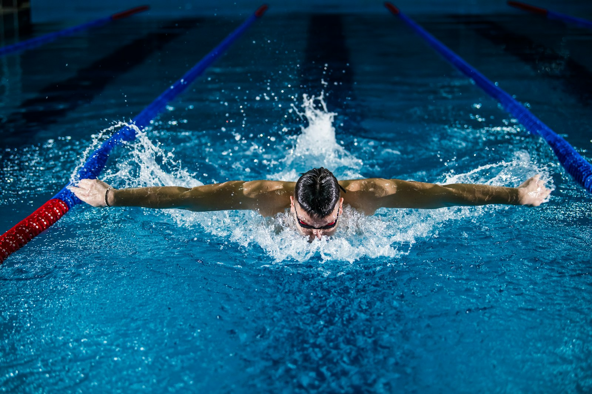
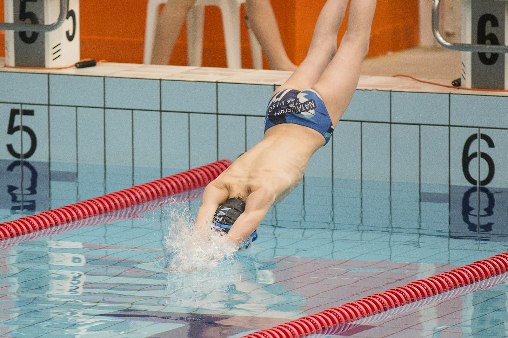

August 27, 2026
The hardest practices in high school sports happen before most students are awake, in water cold enough to finish the waking-up job. Boys' swimming has no trash talk, no highlight reels, and no crowd noise that reaches underwater — just a black line on the bottom of the pool and a pace clock that never negotiates. It is one of the smaller sports on the national chart and one of the most demanding per participant, a winter and spring grind that turns out some of the fittest athletes in any school. In the Bay Area, where one local club became a legend of American swimming and the weather allows outdoor pools to run all year, the grind has a hometown.

The NFHS High School Athletics Participation Survey for 2024–25 counted 119,102 boys in high school swimming and diving in the United States — tenth among boys' sports, and a number that undersells the sport's footprint, because nearly every one of those boys also spent years in club swimming before he ever wore a school cap. The survey's record year — more than 8.2 million total participants — included 138,303 girls in swimming and diving, making the pool one of the few genuinely co-ed cultures in school sports: same lanes, same workouts, same clock. California is a swimming state in a way few others are. Its club system is the deepest in the country, its high school section meets double as national-level competitions, and the CIF State Swimming and Diving Championships in Clovis gather school champions from a federation of more than 1,600 schools into one of the fastest high school meets anywhere.
Swimming's version of fairness is absolute. There are no judges in the individual events, no style points, no recruiting rankings that matter once the starter sounds — a time is a time, identical in meaning in every pool in America. That purity shapes the athlete. A boy learns quickly that improvement hides in unglamorous places: a better streamline, a cleaner turn, one more dolphin kick off the wall. Events reward every build and temperament — the sprinter who lives for twenty seconds of violence in the 50 freestyle, the distance swimmer who treats the 500 like a chess match, the breaststroker whose gift is rhythm, the diver whose sport is half gymnastics. And because relays score double in most formats, the fourth-fastest boy on the team is a weapon, not a spectator.
Swimming is also the rare sport whose development model the rest of youth sports could copy. Age-group club swimming sorts boys by age and proven times rather than by hype, so a late developer is never cut at eleven — he simply keeps racing his own bracket until his body arrives. The workload is famously high but almost entirely low-impact, building enormous aerobic capacity without the collision cost of field sports. Technique is taught in progressions for years before training loads peak, and the sport's culture of morning practice quietly builds the most transferable skill in athletics: showing up, daily, before it is convenient. Programs that do it right produce seniors who can hold a pace most college athletes in other sports cannot — and who still like the water enough to swim at sixty.

The region's place in American swimming history is outsized. The Santa Clara Swim Club became one of the most famous clubs in the world, developing Olympians across generations and anchoring a local culture in which serious swimming is simply what some families do. High school programs across the Peninsula, the East Bay, and the South Bay feed on that culture: section meets at the Central Coast and North Coast level routinely produce nationally ranked times, and the road to the state meet in Clovis runs through some of the fastest schoolboy racing in the country. The Bay Area's mild winters are an unfair advantage the region happily uses — outdoor pools train year-round here while half the country's programs wait for spring — and summer league swimming in the suburbs gives thousands of younger boys their first taste of the sport in its friendliest form.
For the fastest, the ladder leads to college rosters that value exactly what the clock measures, and beyond them to the national team pathway that American swimming — the most successful program in Olympic history — has refined for decades. The more common destinations are nearly as valuable. Swimming is the definitive lifetime sport: the boy who survives four years of doubles leaves with shoulders, lungs, and a discipline that transfers to everything, plus a workout he can still do at fifty. Many become the next generation of the system — summer league coaches, club assistants, high school officials — which is how a swimming culture renews itself without anyone issuing a press release.
Boys' swimming will never win the attendance contest, and its athletes seem to prefer it that way. With more than a hundred thousand high school participants, a development system built on patience and proof, and a Bay Area tradition that runs from summer league to the Olympic pipeline, it is the quietest grind in school sports — and one of the most productive. The pace clock is already running at tomorrow's 5:30 practice. It will not negotiate then, either.
Photos via Unsplash (free to use).